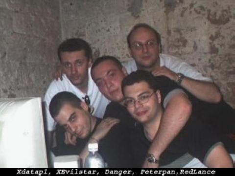
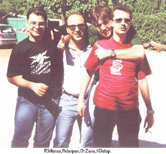

***********************************************
* RESOCONTO DI 3 GIORNI ROMANI DI HACKIT 2000 *
* By O-Zone - Peterpan - RedLance - Xdatap1 *
***********************************************
Per informazioni ufficiali: http://www.hackmeeting.org
Per informazioni sullo SLUG: http://siena.linux.it
*** Intro. ***
(Marco)
Tutte le strade portano a Roma, si dice... e quest'anno tutte le strade hanno
visto un gran traffico verso la citta' capitolina dal 16 al 18 giugno,
i 3 giorni in cui si e' svolto l'HackMeeting 2000 (HackIt2K), una
manifestazione ormai giunta alla sua terza edizione e che puo' vantare una
buona folla di partecipanti.
Ma qual'e' il senso di una manifestazione come l'HackIt? La figura
dell'hacker tipico ormai e' diventata quella del ragazzo (14-22 anni) che sta
molte ore connesso a Internet, ha vari contatti e amicizie su reti quali
IRCNet e EFNet e trova i possibili modi di entrare nei server che vuole
"bucare". E' naturale quindi che l'HackIt divenga un punto di ritrovo per
molti di loro, che si riescono a incontrare dopo aver parlato per giorni e
giorni solo sulla Rete.... L'HackIt diventa inoltre un luogo dove potersi
scambiare conoscenze, e, diciamo, dove poter dimostrare le proprie capacita'
(anche per la gestione delle "Pubbliche Relazioni" tra i vari gruppi o
"crew", come si chiamano in linguaggio tecnico). Inoltre, nei 3 giorni di
raduno, sono stati tenuti anche alcuni seminari (rispettando piu' o meno il
programma previsto) su interessanti argomenti, dai protocolli di rete
all'accessibilita' delle informazioni sulla rete.
E poi per qualcuno i 3 giorni di HackIt potevano pure essere una buona scusa
per andare al giro per Roma (eh, O-Zone, che ne dici?? Perche' non posti un
resoconto sul cibo del McDonald di Roma? ^__^ )
* Chi siamo.
Venerdi' mattina alle 11:30 partiamo io (Marco [RedLance]) e
Peterpan (Pierpaolo) da Siena e alle 14 siamo a Roma. Da subito si nota il
caos di macchine e il traffico romano, con la gente che ti spunta da tutte le
parti, come fossero funghi dopo un'aquazzone... Ovviamente alla prima svolta
per andare sulla via Prenestina (dopo l'uscita dal Grande Raccordo Anulare)
sbagliamo direzione e, consci di esserci subito persi, chiediamo a un
simpatico e gentilissimo romano che, tra "Ao", "Embe'" e dialetto romano
vario, ci fa capire che dovevamo svoltare a destra invece che a sinistra...
e cavolo, non bastava dirlo subito senza 20 intercalari??? :)
* L'ambiente esterno.
L'HackIt (credo si sia capito) si e' svolto a Roma, nel centro sociale "Forte
Prenestino". Sul sito erano presenti tutte le informazioni per raggiungere il
luogo, ma... ci e' voluto comunque circa una mezz'oretta e varie domande ai
passanti prima di trovarlo. Possiamo affermare che la persona che piu' ci ha
aiutato e' stato un romano in pantaloncini e maglietta che stava mangiando un
panino di 2 kg e che alla domanda: "Buongiorno, scusi, sa dov'e' il Forte
Prenestino?" ha risposto alzando il braccio e indicando la strada :)
Interessante ^__^
Una volta giunti li' ci si presenta di fronte un parco, ma nessun cartello o
indicazione che indichi l'HackIt (se escludiamo lo striscione "Zona
degiubileizzata" con tanto di disegno del Papa in un segnale
triangolare ^__^ ). Vediamo dentro al parco l'ingresso di quello che una
volta deve essere stato un fortino militare... Ci dirigiamo subito la', ma
ancora nessuna indicazione riguardante l'HackIt... chiediamo a 2 ragazzi
all'ingresso che finalmente ci confermano che quello e' il Forte Prenestino
e che l'HackIt si svolge al suo interno...
Ci lanciamo subito dentro (dopo aver pagato l'offerta di 5000 lire per il
Forte, pena l'uso continuativo 24 ore su 24 di windows 95) e finalmente
iniziamo a vedere poster neri con il disegnino del chip in verde, simbolo di
HackIt2K. Evvai! Oddio, certo che il simbolo del chippettino e' un po'
assurdo... piu' che dare l'idea di hacker, da' l'idea di acaro (hanno pure
una certa assonanza)... e dato il posto e i metri di polvere
accumulata.... :P
* L'ambiente interno.
Partiamo con un breve giro di perlustrazione, seguendo anche le indicazioni
del programma che ci avevano consegnato all'ingresso. Il Forte e' molto
grande, c'e' la zona da te' (per gli inglesi eventualmente presenti al
meeting, alle 17 pausa te' ovviamente... saro' allusivo???), la zona
'cibarie varie', la stanza cosiddetta 'pub' (non ne capiamo il motivo, cmq...),
il parco per gli accampamenti in tenda, la zona del cinema... tutto molto
interessante, ma non c'e' l'ombra di un PC... uhm... possibile???
Rimaniamo sconcertati finche' non vediamo un cartello indicatore: "Cattedrale"
con la freccia che indica delle scale... le scendiamo e vediamo finalmente
due cartelli attaccati al muro: "Macchine a sinistra"... "Macchine a destra"...
ora, non essendo consentito l'ingresso alle autovetture ci sorge un'idea....
macchine = computers!!!! uhm, che geni, eh!!
Ci infiliamo nella sezione di destra e cosa troviamo? Un corridoio veramente
molto lungo con tante stanzette laterali dove gia' la gente si era sistemata
con PC fissi e portatili :) uao, che bellezza... e ogni PC connesso alla rete
interna con cavi RJ45 (sulla cablatura della rete ci sarebbe molto da ridire
[o da ridere...], dato che c'erano metri e metri di cavi sparsi piu' o meno
ovunque e i ragni di 5kg presenti al Forte scambiavano i cavi per delle belle
ragnatele e cercavano di catturarci le mosche). Continuando a camminare per il
corridoio incontriamo le prime facce note: Leandro e Franco del FLUG, gia'
belli piazzati davanti ai rispettivi PC (Franco con un iBook tutto colorato
che stonava davvero con l'ambiente monotono e militaresco del Forte e con la
sua barbetta rossiccia :). Un saluto e continuiamo il nostro giro, tornando
indietro e imboccando l'altro corridoio... stupore... questo e' ancora piu'
lungo dell'altro, e anche qua tutte le stanzette con la gente sistemata ai PC.
Troviamo X3V|L574R e {D4nG3r} della Mentorz Crew e io mi metto un po' li' con
loro, mentre Pierpaolo va a fare un giro per vedere i seminari presenti.
*** Il primo giorno. ***
(Pierpy)
Tra i seminari piu' seguiti ed interessanti c'era quello sulle packet radio,
cioe' sul trasferimento dati via radio e non via telefono. A parlare un ragazzo
torinese, Andrea Borgnino, a partecipare circa una trentina di persone;
sapevate che anche con questa tecnologia si riescono a raggiungere velocita'
di trasferimento dati fino a 128kb/sec?!?
(Marco)
Nel frattempo io sto con i Mentorz e ci mettiamo a vedere un po' di siti. Da
subito ci rendiamo conto che la connessione e' lentissima, una cosa tremenda...
2Kb/sec quando e' tanto... Probabilmente l'organizzazione non si aspettava un
afflusso cosi' elevato di persone, per cui la banda in uscita non era
assolutamente adeguata al numero di PC connessi... se poi ci mettiamo pure che
ogni tanto il gateway era 'fuori uso', nel senso che non rispondeva nemmeno ai
ping (che i ragni di 5kg rosicassero i cavi??)..... si inizia a capire che per
fare davvero qualcosa di interessante in rete, non era proprio l'occasione
migliore....
Me ne vado un po' in giro e trovo pure leofire, che invece di trovarsi una
postazione fissa se ne andava in giro a vedere un po' chi c'era e se qualcuno
faceva qualcosa di interessante. Ma per ora nulla degno di nota.
Verso le 18 me ne esco all'aria aperta, mentre aspetto Xdatap1 (Paolo) che
dovrebbe arrivare dopo essersi fatto il giro di Roma per ben 3 volte (ma era
davvero cosi' difficile da trovare il Forte?). Ci incontriamo e ci lanciamo
dentro al Forte... dall'alto della mia esperienza conduco Paolo in un giro
turistico dentro l'HackIt, e alla fine andiamo alla stanzetta dei Mentorz
(dichiarata "Mentorz in collaborazione con SLUG" :)
(Paolo)
Arrivo All'Hackit dopo una stressante giornata di lavoro.
Le indicazioni sulla cartina mi fanno raggiungere abbastanza rapidamente
la zona Prenestina, anche se diventa piu' difficile trovare qualla maledetta
Via Delpino... anche perche' le indicazioni fornite dai passanti erano
contraddittorie.
Alcuni descrivevano il forte come un castello abitato da fantasmi e che solo
pochi prescelti erano riusciti a visitare incolumi.
Giunto al forte vedo la faccia amica (anche se non meno brutta del solito)
di Marcobaldoshow.
Ci piombiamo all'interno... i sotterranei, strapieni di pc e roba tecnologica,
mi ricordavano la base ribelle del film guerre stellari...
ad un certo punto sento un tremito nella forza... sono loro!
I cugini del Flug avevano occupato un 'loculo' con il loro ciclope.
La forza scorre vigorosa sul loro clan ;-)
Giungiamo nel loculo "Mentorz powered by Slug" e faccio conoscenza con Danger
e XEvilStar.
Cazzeggiamo un po' e poi mi dirigo al seminario "Programmazione e Zen"
da oggi i miei programmi avranno una energia nuova! ;-)

(Marco)
E fino alle 3 di notte me ne sto li', diviso tra l'installazione di Slackware
7.0 sul mio portatile (mamma mia quant'e' brutta... voglio Debian 2.2 su CD!!
Sono stato in giro ma nessuno che la avesse... l'unico era Leandro, ma diceva
di averla prestata... bugia bugia :) e i controlli a alcuni siti effettuati
dal PC di {D4nG3r}.
Ben presto il poco ossigeno presente nell'aria viziata (considerando che
l'unica areazione era data da 2 piccole fessure nel muro) viene sostituito dal
fumo di sigarette e non solo... Inoltre siamo costretti a urlare per parlarci
dato il bassissimo volume al quale vengono tenute le casse da 4000 GigaWatt
(uhm.. ma esistono??) dei simpatici amici della stanza accanto e che sparano
in continuazione della rilassante musica elettronica composta prendendo a
martellate un sintetizzatore... Mah...
A un certo punto arriva una tizia strana, capelli rossi, vestita assurda,
accompagnata da un tizio vestito con una specie di kimono bianco e inizia a
leggere le scritte in giapponese presenti sulla maglietta di {D4nG3r}.. Io
sfodero le mie vere origini japponesi (so 3 frasi in giapponese :) e me ne
esco con un: "Beh, in effetti c'e' una bella frase da dire... Watashi no omoi
anata no kokoro ni tonde yuke"... la tizia ne fa l'analisi e la traduce pure
bene... pero'.. sembrava completamente ubriaca e invece forse aveva un 10%
del cervello rimasto sobrio :) Si mette a parlare con X3V|L574R dicendo che
lei era inglese e che in Italia la cultura del PC sembrava principalmente
maschile, mentre nel suo Paese ci sono molte piu' donne che si intendono di
PC... mischiando a questi discorsi frasi del tipo: "boh, io mi lancio,
chi kojo kojo"... Mah...
Dopo un po' passa un tizio strano... barbetta caprina, maglietta dello GNOME
project, tutto allegro e dinamico... ma non ci posso credere.... Claudio
Cicali!! Il mitico Flexer ;) Lo salutiamo rendendoci conto (come lui stesso
afferma) che e' davvero un "tipo dinamico"... ^__^
Alle 3 io, Paolo e Pierpaolo decidiamo che e' ora di uscire di li', quando
sentiamo un grido di qualcuno in crisi mistica: "ESISTE UN DIO!!!! SIII!! STO
PINGANDO IL SITO DELLA REPUBBLICA"... uhm, noi era 5 ore che stavamo pingando
tutti i siti che ci pare.. mah... A quel punto ce ne andiamo fuori di li',
diretti verso l'albergo, storditi, pieni di polvere ma... abbiamo resistito
al primo giorno di HackIt2K! Altro che smurf.... questa era una tortura :)
(Pierpy)
Venerdì a notte fonda si sono avuti un seminario sui protocolli di rete e
qualche segreto per intrufolarsi nella rete, sfruttando proprio questi, inizio
ore 3:30!!!!
(Marco)
* Prima della nanna... riflessione sulle persone presenti... By RedLance
Riflettendo mi rendo conto che i cosiddetti hackers sono proprio dei tizi
strani... ragazzi che si erano fatti tutta Italia in treno portandosi dietro
PC fissi e monitor, altri che avevano ricostruito nella stanzetta un vero
studio di registrazione e riproduzione di musica elettronica, con tanto di
amplificatori, casse e lampade psichedeliche, altri ancora che invece della
luce tenevano accese delle candele da cimitero... una roba assurda... Forse
mancava solo un po' di gente vestita da zombie e vampiri.... c'erano pure i
mostri di Dungeons & Dragons: Ragno Gigante :)
*** Il secondo giorno. ***
Sveglia e colazione e poi dritti di nuovo dentro al Forte.
(Michele)
Ore 5:15: Sveglia per andare a prendere il Treno a Siena (tenete conto che ero
a dormire dalla mia ragazza a Buoncovento !!! 30Km da Siena). Il
sonno si fa sentire...pace ;). Si va' ! Si radunano le ultime cose,
si controlla che ci sia tutto e via !!!
Ore 6:20: A corsa a prendere il treno alla stazione di Siena !!! Le gambe non
mi reggevano ;)) ho fatto una faticaccia boia...ne varra' la
pena ? Penso di si!!! Ugh! 30K di biglietto !!! Caz..BEEP che ladri !
Ore 7:41: Partenza da Chiusi (e che volevate il diretto Siena-Roma ?!?) per
Roma Termini su un treno ("Cargo persone" sembra la definizione piu'
azzeccata) proveniente da Zurigo. la gente ha l'abitudine di lavarsi
poco ed il risultato e' ben evidente :). Si sopportera' pure questo !
Ore 9:04: Arrivo a Roma Termini !!!! Finalmente !!! Che mondo...mi stupisco
alla vista delle cabine telefoniche della Albacom e Infostrada
(ragazzi so' di Siena...da noi il Mc Donald e' arrivato 10 anni dopo
che era a Roma !!!). Stazione enorme..un sacco di gente...ok,
pensiamo alle cose serie, mi fiondo all'APT per informazioni. Chiedo
gentilmente come arrivo al Forte Prenestino ed il *commesso* subito
mi dice: "Ah...forte prenestino...al convegno degli hacker eh ?" ed
io: "beh...che ci vuole fare...capita !" :) e sorrido disgustato.
Ci si informa dell'albergo e poi si parte alla scoperta di Roma (eh
si, diciamo che per me l'hackmeeting e' stato un pretesto per una
gita a Roma ;)))) La mia ragazza subito si informa di dove sono i
negozi (Via del Corso) e si parte (a piedi, ovvio !). Arrivati,
un'infinita' di negozi dopo, a Piazza di Spagna, optiamo per un
*passaggio* dal Metro' (che d'ora in poi partecipera' attivamente ai
nostri spostamenti *romani*) e siamo tornati alla Stazione Termini e
poi pranzo al Mc Donald (bleah !!! :P).
(Pierpy)
Nella giornata di sabato i seminari interessanti e molto seguiti sono stati
quello sul TCP/IP, protocollo di rete, un po' la continuazione di quello della
notte, tenuto dai ragazzi dell'hacklab milanese. Interessante anche se
strettamente tecnico, illustrava la struttura di un pacchetto tcp/ip che ha il
compito di contenere i dati sballottati qua e la' per la rete, e alcuni metodi
grazie ai quali questo pacchetto puo' essere modificato e quindi perdere il
nominativo del mittente o essere criptato e quindi non intercettato se non dal
destinatario.
(Marco)
Insieme seguiamo un po' l'interessante seminario sull'accessibilita'
dell'informazione in Rete tenuto da gente del FLUG (Leandro in particolare si
fa notare... squilla il cell a mezza lezione con una musichetta veramente
assurda... la gente che lo guarda in cagnesco pronta a strangolarlo e lui,
che, imperterrito, risponde con un "Ciao MAMMA!!!".. e risate a non finire).
Da notare l'interessante dimostrazione di come realizzare un sito in modo che
sia compatibile con i sintetizzatori vocali per poter essere anche consultato
da non vedenti...
(Paolo)
Molto interessante il seminario sul TCP/IP. Il pubblico era di preparazione
disomogenea e quindi gli argomenti sono stati affrontati con calma e
sviscerandone tutti gli aspetti piu' interessanti.
Da un discorso riguardo gli Sniffer nasce un'idea...realizzare un server
antisniffer per reti locali... inizio a rimuginare...
(Pierpy)
Sempre sabato mattina, altro interessante seminario abbastanza seguito,
organizzato praticamente da tutta la telematica fiorentina, e' stato quello
sull'accessibilita' della rete e sull'abbattimento delle barriere telematiche
nei siti web. Piu' di cinquanta persone hanno seguito la conferenza, tenuta
principalmente da Ferry Byte con la partecipazione di Shine e Tommaso Tozzi e
interventi anche di The Walrus. Tra le problematiche affrontate nel seminario
in questione, la difficolta' di consultazione dei nuovi siti web a grafica
avanzata, piena di immagini e di scripts e applicativi pesanti vari, da parte
di portatori di handicap, sordomuti, non vedenti etc. e la non diffusione nei
siti di versioni solo testo veloci da consultare anche da postazioni non
troppo potenti. Inoltre per render l'idea e' stata fatta, sempre sabato
mattina in questo incontro, una dimostrazione di quello che puo' essere
un'idea che viene incontro ai non vedenti e cioe' un lettore vocale di una
pagina web.
(Marco)
Prima di uscire per andare a pranzo, rincontriamo buona parte del FLUG: Franco
Vite, Christian Surchi, Leandro... e nel frattempo telefoniamo pure a O-Zone
(Michele) che era arrivato da poco a Roma con la sua ragazza e stava facendo
il turista invece di venire all'HackIt.... e' stato pesantemente offeso
(Pu-Zone) e costretto a dirigersi verso il Forte Prenestino con tutti i mezzi,
pena il divieto a vita di scaricare immagini porno dalla Rete :)
Io e Pierpaolo ce ne andiamo a pranzo fuori con un amico romano, mentre Paolo
rimane all'interno del Forte dove consuma un lauto pranzo a base di: panino
al pomodoro, simmenthal e acari della polvere, bistecca di ragno di 5 kg,
dessert al limone un po'... acido ^__^
(Paolo)
Non ho mangiato meglio nemmeno a Valona ;-)
(Michele)
Ore 14:00: Arrivo, dopo vari giri e svariati problemi (tipo il Tram senza
corrente) al Forte Prenestino...uauu !!! Che posto fortissimo !!!
All'ingresso ho subito trovato Paolo (Xdatap) che mi ha *scortato*
alla visita del posto: veramente forte !! Subito la mia ragazza ha
cominciato a rompere ma appena ha sentito il frescolino che c'era
nelle cellette ha taciuto (o quasi). Che le sia piaciuto ? (il
fresco, intendo eh !!!). Decine e decine di acari con le loro
macchine erano *rintanati* intenti a fare le cose piu'
strane: hacking, hijacking, chat, smurf, spam, etc... era veramente
notevole !!! Ho visto di tutto...addirittura un vecchissimo
portatile Olivetti con display a cristalli liquidi...che forza !!!!
Ambiente stupendo ed atmosfera magica. Bello. Ho subito preso un po'
di materiale da appendere alla stanza dello Slug. :)
Ah..ho conosciuto X3vilstar (si scrive cosi' ?), BBK e AcidCrash.
Ore 16:15: Siamo usciti con Paolo e siamo andati ad un bar vicino a bere un po'
quando e' arrivato Pierpaolo. Avevo gia' indossato la mitica
maglietta dell'HM che Paolo, gentilmente, mi aveva comprato il giorno
prima (e che ho ancora da pagarli !!! Uff !!! :)). Arriva anche
Pierpaolo e Redlance. Si dicute un po' e si decide di andare via
l'indomani con loro (visto che il treno l'avrei evitato volentieri).
(Marco)
Nel pomeriggio ci ritroviamo tutti (RedLance, Peterpan, Xdatap1, O-zone piu'
ragazza) al bar presente vicino al Forte e ci rilassiamo circa 2 ore, finche'
Michele non se ne torna con la ragazza a fare il turista per Roma (Pu-Zone,
fai il resoconto sull'HackIT... no, vabbe', lascia perdere, tanto sei venuto
a Roma a fare il turista, non l'hacker) e noi altri ci si riavvia
(CTRL-ALT-DEL) in direzione del Forte.
(Pierpy)
Nel pomeriggio e' toccato a The Walrus nella sala da te', appena entrate al
forte sulla destra, che ha affrontato le problematiche etiche dell'hacker,
perche' l'hacker deve bucare i sistemi?!?
A partecipare c'erano i ragazzi dell'hacklab fiorentino e una quarantina di
persone in tutto viste anche le dimensioni del posto. Il concetto girava sulla
voglia del pirata informatico di dimostrare che la rete non e' sicura e
chiunque puo' intercettare in qualche modo i dati di qualcun altro con grossi
rischi economici e naturalmente di privacy. Poi, ribadisce sempre The Walrus,
in giro si trovano comunque hackers malintenzionati che usano le loro
conoscenze anche a scopi loschi e illegali, ma questi non fanno parte degli
smanettoni, ma dei delinquenti.
(Marco)
Torniamo nella stanzetta Mentorz+SLUG e troviamo una simpatica ragazza
interessata al Pinguino, che aveva portato il proprio PC da casa perche'
voleva installare una qualche distribuzione Linux per (cosi' dice lei)
"hackare"... Paolo, da marpione qual'e', si lancia all'attacco, sfodera la sua
"arma speciale".. CD di installazione di Mandrake ultima versione, e lo
infila... nel lettore CD del PC di Erika (cosi' si chiama la ragazza).
L'installazione termina con la creazione di un floppy di boot, ma...
accidenti!! floppy rovinato.. e ora come facciamo a far partire questa
Mandrake?? Erika era quasi in crisi isterica perche' aveva Linux sul PC e non
lo poteva usare... Ma... nessun problema... ecco che sempre il vulcanico (o
vulcaniano?? vediamo se ha le orecchie a punta) Paolo fa sfoggio del
lucentissimo CD formato tessera di LinuxCare, lo inserisce nel lettore CD,
parte una mini-Debian avviata da CD, e con quella riesce a montare la
partizione linux sull'hard disk e a creare un floppy di boot con LILO.
Evvai!!! Ovviamente la home page del browser di Erika e' stata cambiata in
http://siena.linux.it e lo SLUG ha fatto il suo figurone niente male ^__^
SLUG RuLeZzZzZz!!!
(Paolo)
Installazione abbastanza complessa date le numerose interferenze; Il ragazzo
di Erika, tal Igor, era un vero caciarone (come si dice li) e urlava cose
del tipo: "aoh! che stai affa'!" e roba simile degna "der Piotta"
Ho dovuto sfoderare alcune tecniche Jedi per impedire che alcuni acari mi
sottraessero il magico Recovery Cd. ;-)
(Michele)
Ore 17:00: Siamo ripartiti in Tram per il centro, di nuovo in Metro' fino a
Piazza di Spagna dove la mia ragazza si e' deliziata con i numerosi
negozi di vestiti ivi presenti...ufff !!! ;))
Ore 19:15: Stanchi e affamati (stremati, dirrei) siamo partiti alla volta di
Via Palestro per trovare questo fantomatico "Hotel Harmony" dove
dormire. Trovato quasi subito, che culo !!!! CI siamo subito
distesi su quel lettone e, cambiati i vestiti, siamo
ripartiti per finire di vivere il sabato "romano".
Ore 21:30: Di nuovo in metro' a Piazza di Spagna (che palle !!!) dove abbiamo
cenato con un gelato (3000 lire 2 gusti...azz !!!!). Siamo poi andati
al vedere questo Planet Hollywood: BELLA CAGATA !!!! L'80%
del *pub* ? *bar* ? *pizzeria* ? era lo shop che vendeva
souvenirs... caz..BEEP che merdata !!!
Ore 23:45: Partenza per tornare, ormai esausti, a dormire in albero.
Finalmente !!!!!
Ore 00:20: Arrivati in albergo, dopo aver preso una birra ad un *pub* ? boh
!!! Che strana citta'...ma chi se ne frega: a LETTO !!!! :DDD
(Marco)
Arriva la notte e arriva un ex-Mentor (Ac|dCrash) a intralciarci e a rubarci
segreti professionali.... Ahem.... Eravamo all'HackIt... chissa' cosa
facevo... indovina un po' ^__^
Nella nostra stanzetta inizia a crearsi un certo traffico, facciamo capire di
saperci fare, sfoggiamo le nostre capacita' di SLUGgers incalliti e Linuxisti
espertissimi, la gente che viene a fare domande su Linux, su come si
installa.... e a ognuno veniva consigliato: "Guarda, se dovessi avere dei
problemi, connettiti al sito http://siena.linux.it e poi iscriviti alla
mailing list.... per qualunque problema ci siamo noi dello SLUG".... questo
si' che vuol dire farsi conoscere.... e poi a un certo punto passa uno con un
registratore digitale in mano e chiede se vogliamo fare un'intervista per
Radio Cybernet.... farsi scappare l'occasione?? Ma siamo pazzi?? Forza
jaromill!!!! Scaricatevi tutti la mia Mitica intervista fatta per Radio
Cybernet!!!! Che voce che ho, eh... mi registrerei e starei ad ascoltarmi
ore e ore (ma che caxxate sto dicendo?? saranno i postumi dei fumi
dell'HackIt, va')
(Paolo)
Precisazione sul fumo...
Con tutta quella 'nebbia' O-Zone ha detto alcune cose sensate (oddio non
esageriamo... magari grammaticalmente corrette!)... che sia terapeutico?
Propongo un dibattito! :-)
(Marco)
Nel frattempo facciamo alcune prove di 'sniffing-detection', un problema
sollevato dall'iperattivo Paolo, cercando di rilevare quando le schede di rete
vanno in 'promiscous mode' per intercettarsi tutti i pacchetti che passano
sulla ethernet locale e capire qual'e' l'IP assegnato alla scheda dalla quale
proviene lo sniffing.
(Paolo)
Il lavoro svolgeva bene... l'unico dubbio rimasto e' stato come incenerire via
Tcp/Ip il Pc che e' stato individuato mentre sniffa ;-) [NdMarco dipende
cosa sniffa :)) ]
(Marco)
Verso mezzanotte io, Pierpaolo e Paolo ce ne usciamo dall'aria viziata della
stanzetta e poi verso l'uscita del Forte... Paolo, stanco e beato, si dirige
verso l'albergo a farsi doccia e nanna, mentre io e Pierpaolo ci facciamo un
girettino per il centro di Roma, inconsapevoli che al giro ci sono pure
O-Zone e la sua ragazza.... che fortuna non averli incontrati ^__^
*** And... Last and Least... il terzo giorno, l'ultimo. ***
Vabbe', il riassunto qua potrebbe essere "nulla degno di nota", se non ci
fosse O-Zone che riesce a incasinarsi pure con la sua macchina fotografica...
(Michele)
Ore 9:00: Sveglia !!!
Ore 10:00: Si esce per andare a fare una magnifica passeggiata *culturale*
nella Roma dei monumenti. Preso il metro',siamo scesi al Colosseo
e siamo andati a visitare tutti quei sassi e mattoni vecchi di
quelle parti facendo un sacco di foto ;)) WOW !!! Poi di nuovo a
dare l'ultima occhiata a in Via del Corso (UFF !!!!) fino a Piazza
del Popolo (vicino a Villa Borgese...credo!) dove con il metro' siamo
tornati alla Stazione Termini. Di nuovo pranzo al McDonald :PPP
(Marco)
In mattinata ci dirigiamo, tanto per cambiare, al Forte dove vediamo che la
gente sta smontando tutte le attrezzature e si preparara per andarsene...
Ma... chi arriva cosi' all'ultimo??? Da non crederci... Defcon7 (Giacomo) e
HC-LEX (Alessio) che si lanciano subito nelle cellette alla volta di {D4nG3r}
e X3V|L574R e si iniziano a divertire con i PC...
Io e Paolo, stanchi dell'atmosfera delle cellette (sembra di essere carcerati)
ce ne usciamo e ci sdraiamo nel prato intorno al Forte per prendere il sole,
quando una ragazza ci si avvicina e ci pone un'ambigua domanda: "Ce l'avete
una cartina?".... che sia straniera e stia cercando una mappa di Roma?
Pensando che siamo troppo ingenui le rispondiamo con un dispiaciuto "no, mi
spiace", anche se potevamo pure chiederle se la cartina la voleva di Roma o di
qualche altra citta'... magari voleva venire a visitare Siena e prima si
voleva fornire di una cartina della citta'..... OK, d'accordo, la smetto di
fare l'ingenuo..... ma e' per sdrammatizzare, dato che certe idee le accetto
ma non le condivido.
Aspettiamo il ritorno di Pierpaolo dall'assemblea e poi ci dirigiamo a
mangiare ad un simpatico ristorante dove cucinano un buon pesce... e qua si
puo' vedere la vera natura di Pierpaolo, che finora non aveva mai mostrato...
Pranzo di Pierpaolo: Antipasti misti di mare, 3 diversi tipi di primi di
pesce... dopo i quali, sostenendo di avere ancora "un po' di fame" si fa
portare anche una bella frittura mista.... giuro che io, Paolo, Roberto
(l'amico romano di Pierpaolo) e Paola (altra amica di Pierpaolo a Roma) siamo
rimasti sbalorditi... non ci potevamo credere... evabbe'.... come dice un
cantante: "sono cose della vita.. vanno prese un po' cosi'"
(Michele)
Ore 16:00: Paolo & C. vengono a *prelevarci* dalla stazione per tornare al
forte a fare gli ultimi saluti prima della partenza. Il caldo
insopportabile di Roma mi costringe a ritornare nelle
cellette del Forte...ahh..che frescura !!!! Tutti in partenza... e'
un po' triste l'atmosfera...finito tutto, da domani si ricomincia:
lavoro, giramenti vari, mazzi e cazzi..uff !!!
(Marco)
Dopo il pranzo (o lo devo chiamare l'abbuffata di Pierpaolo??) ci rilanciamo
verso quella simpatica zona di Roma che e' il Forte Prenestino dove ci
troviamo pure con O-Zone e la sua ragazza. E qui, la paessima idea di O-Zone:
"Facciamo una foto dello SLUG"... va bene, no problem... O-Zone tira fuori
la sua arma segreta (macchina fotografica modernissima e super-complessa) e si
trasforma con un lampo e un tuono in... Super-Pu-Zone... Il nostro eroe si
lancia verso l'ignaro FerryByte consegnandogli la macchina fotografica e
istruendolo perche' ci scattasse una foto a noi 4 dello SLUG... ci mettiamo in
posa, tutti pronti, quando il povero FerryByte se ne esce con un "ma non fa
nulla.. forse e' finito il rullino". Il nostro supereroe Pu-Zone contesta cio'
di cui e' sicurissimo: "ma no, ma quale finito il rullino, devi premere il
tasto verde, poi il tasto rosa, poi due gradi a destra, sette gradi a
sinistra, apri l'obiettivo, premi CTRL-ALT-DEL e a quel punto vedrai che
scatta la foto"... Il povero FerryByte esegue le istruzioni ancora una volta,
ma ancora nulla... A quel punto scatta l'ira del Super-Pu-Zone il quale si
avvicina alla macchina fotografica pronto con il suo sguardo laser a
disintegrare FerryByte, prende la macchina, quando all'improvviso esclama...
"Oh, e' davvero finito il rullino..." Le offese verso il Super-Pu-Zone sono
talmente irripetibili che non possono essere trascritte, basti dire che per
salvarsi e' dovuto uscirsene con una scusa del tipo: "fermi, fermi, tanto ne
ho un altro... l'ho trovato per la strada in terra a Roma".. bugia bugia :)
Alla fine riusciamo a immortalare la sezione dello SLUG presente a HackIt2K.
(Michele)
Ore 17:00: Si riparte in macchina con Pierpaolo verso Siena.
(Marco)
Sono all'incirca le 17, siamo reduci da 3 giorni di guerra telematica e di
affermazione territoriale per lo SLUG, siamo stanchi ma felici, per cui
decidiamo che e' l'ora di andarsene... O-Zone viene costretto a andarsene in
macchina con Pierpaolo (ovviamente con la sua ragazza), mentre io,
Defcon7 e LEX ce ne andiamo in macchina con Paolo.
Accompagnamo {D4nG3r} (con il PC fisso incluso) alla stazione e, mentre
Defcon7 e LEX comprano pecluche per le rispettive ragazze lasciate a Siena,
ce ne andiamo a prendere una bibita. Risaliamo in macchina e cerchiamo (un po'
a caso un po' con intuito) di ritrovare il casello dell'autostrada... in un
batter d'occhio lo troviamo, lasciandoci Roma, l'HackIt, e i ragni da 5 kg
alle spalle....
(Pierpy)
Giudizio sui seminari...
E' la cosa piu' noiosa dell'HackIt?!? No, invece, almeno sulla carta erano
veramente interessanti, ma erano tanti!!! Proprio per questo motivo in
assemblea conclusiva piu' di qualcuno si e' lamentato della contemporaneita'
degli appuntamenti, che naturalmente costringeva i partecipanti a sceglierne
uno rispetto ad un altro e cosi' via. La risoluzione del problema e'
difficile in quanto erano tanti e il tempo disponibile era comunque poco, anche
se si e' fatto notare come nell'arco delle giornate, specie la mattina, grossi
appuntamenti seminariali non erano stati previsti, mentre nel pomeriggio vi
era una concentrazione, anche a causa di slittamenti e cambiamenti di orario.
* Conclusioni.
Il viaggio e' terminato... il resoconto pure...
Propongo di metterci la parola...
F I N E
By: RedLance, Xdatap1, Peterpan, O-Zone
Special thanks goes to: O-Zone / Super-Pu-Zone
per averci allietato con la sua presenza
giullaresca ^__^
Un saluto particolare a: H0m3r (By Paolo)
{D4nG3r} e X3V1L574R (By RedLance)
Tutti gli amici del FLUG :)

|